Graph Convolutional Network and spectral clustering
Contents
Graph Convolutional Network and spectral clustering¶
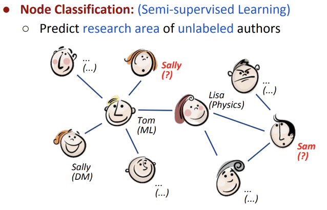
Contribution
simple and well-behaved layer-wise propagation rule for nn models, can be motivated from a first-order approximation of spectral graph convolutions
gcn can be used for fast and scalable semi-supervised classification of nodes
논문은 그래프 각 노드의 Feature 인 X와 인접 행렬A 를 모델의 입력으로 이용하는 GCN , \(f(X,A)\) 를 제시한다.
다음과 같은 Graph Convolution 연산을 여러 번(multi-layer) 진행한다.
layer-wise propagation rule
\(H^{(l)}\) : l번째 layer의 Hidden state이며 , \(H^0 = X\) (그래프 노드의 초기 feature)이다.
\(\tilde{A}\) : \(A + I_N\) 으로, 인접 행렬(A) 에 자기 자신으로의 연결(self-loop)를 추가한 것
\(\tilde{D}\) : 각 노드의 degree를 나타내는 대각 행렬
\(W^{(l)}\) : l번째 layer의 학습가능한 parameter
\(\sigma\) : 비선형 함수로 \(ReLU\) 를 이용
GCN 은 Spectral graph convolution의 first order approximation이다. 그렇다면 spectral graph convolution 이란 무엇일까?
Spectral graph convolution¶
spatial convolution
공간적인 정보를 기반으로 convolution이 이루어진다.
예를 들어 이미지에서 CNN은 필터를 통해 중심 픽셀과 근처의 픽셀정보를 토대로 filter에 해당되는 특징을 출력한다.
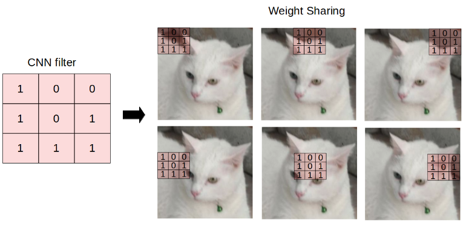
같은 방식으로 spatial graph convolution을 한다면, 각 노드와 가깝게 연결된 이웃 노드들에 대한 convolution 연산을 수행 할 수 있다.하지만 그래프는 이미지처럼 local invariant하지 않다.
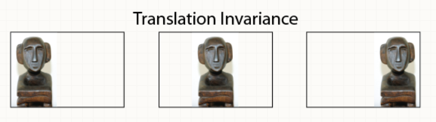
spectral analysis
“spectral” simply means decomposing a signal/audio/image/graph into a combination (usually, a sum) of simple elements (wavelets, graphlets).
“spectral analysis”는 이미지/음성/그래프 신호를 time/spatial domain이 아닌 frequency domain으로 바꿔서(분해해서) 분석하는 것이다.
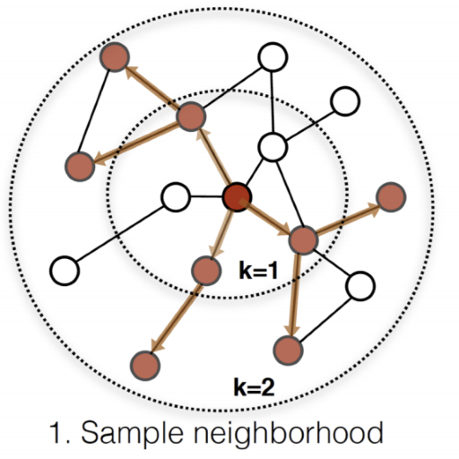
message passing : 그래프의 노드는 고정된 값이 아니라, 시간 흐름에 따른 이웃 노드들의 signal 을 토대로 update가 된다.
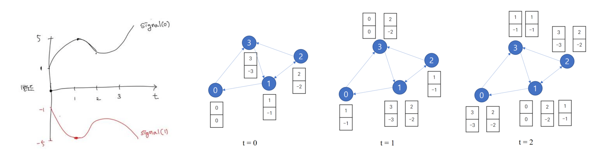
한 노드의 정보는 여러 노드의 signal 이 혼재되어 있으므로, 이를 여러 signal의 요소로 나눠서 node의 특징을 추출하자
→ spectral graph convolution
결론부터 얘기하면 GNN에서의 “spectral” 은 eigen-decomposition of graph Laplacian L 이다.
Fourier Transform(푸리에 변환)
푸리에 변환이란, 임의의 입력 신호를 다양한 주파수를 갖는 주기함수들의 합으로 분해하여 표현하는 것이다.
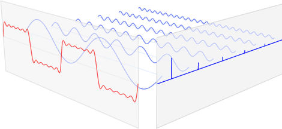 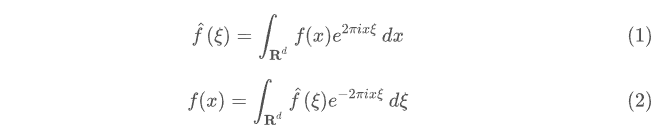
푸리에 변환 (1)의 결과값은 임의의 signal \(f(x)\) 와 \(e^{−2πixξ }\) 의 내적 이고,
오일러 공식에 의해 \(e^{−2πixξ }\) 을 cos,sin 요소의 합으로 표현하면 \(e^{−2πixξ }\) = cos( \(2πxξ) + isin(2πxξ)\)
결국 푸리에 변환은 주어진 signal f(x) 에 대한 cosine에서 유사한 정도, sine에서 유사한 정도의 합
그런데, cosine, sine을 내적하면 0 이 되므로(삼각함수 직교), cosine과 sine basis 의 선형결합을 통해서 푸리에 변환을 할 수 있다.
why Laplacian matrix ?
Laplacian matrix L = D - A
라플라시안 행렬은 인접행렬에 해당 노드의 차수 정보를 추가한 행렬, 해당 노드의 차수를 나타내는 행렬 D 와 인접 여부가 -1인 인접행렬 A를 이용해 구한다.
L 은 real-symmetric matrix 이기 때문에 laplacian matrix 의 eigen-value decomposition을 통해 구한 eigenvector 들은 orthogonal 하다!
따라서 graph signal에 대한 행렬인 laplacian matrix 를 decomposition 해서 구한 eigenvector들의 선형결합을 graph signal의 푸리에 변환으로 이해할 수 있다.
graph laplacian
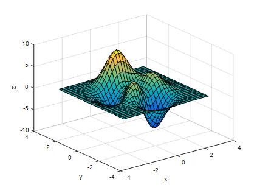 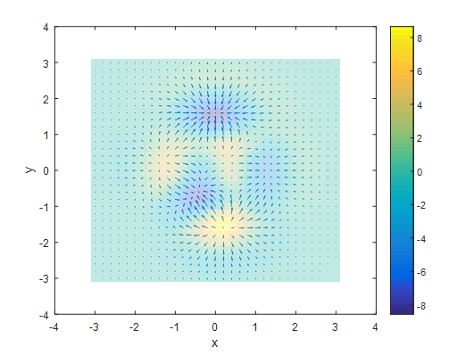
laplacian operator는 gradient의 발산(divergence) 정도에 대한 변화하는 정도를 측정한다. 이를 그래프에 적용에서 이해하면 특정 node에서의 signal이 발산하는 정도는, signal 의 흩어짐 여부 즉, smoothness 에 대한 정도이다. 차이가 적다 = 이웃 노드와 비슷하다 , 반면 차이가 크다는 건 노드 간 다른 특징을 가지고 있다.
⇒ Laplacian matrix는 graph representation 중에서 이웃 노드와의 변화 흐름을 통해, 노드의 특징을 나타내는 그래프 표현이다.
예시)
아래 그림은 사람의 behavior를 graph으로 표현했을 때, 해당 graph의 laplacian 행렬의 eigenvector \(u2,u3,u4,u8,,(0<λ2≤λ3≤λ4≤λ8)\)에 graph 노드를 임베딩한 것이다. \(u^Tf(v_i)\)
u2, 머리와 팔은 가까우니 이웃노드일 가능성이 높고, 머리와 다리는 상이한 노드일 가능성이 크다. eigenvalue가 가장 작은 u2에 임베딩했을 때, graph의 노드들을 이웃과 상이한 노드 집단으로 잘 분리한다. → eigenvector의 선형결합을 통해 가까운 이웃노드에 대한 signal(low eigenvalue) 와 멀리 있는 상이한 이웃노드에 대한 signal(high) 을 추출할 수 있다.
중간정리¶
Laplacian matrix 는 노드 내에 있는 비슷한 노드와 상이한 노드 간의 signal에 대한 정보(smoothness)를 담고 있다.
푸리에 변환은 orthogonal한 signal들의 선형결합으로 이해할 수 있다.
Laplacian matrix는 symmetric matrix고 eigen-value decomposition 을 통해 orthogonal한 eigenvector들을 구할 수 있다.
논문으로 돌아와서,
“symmetric normalized Laplacian” : 라플라시안 행렬을 정규화하는 이유는 GNN의 레이어를 쌓을수록, gradient vanishing 없이 node feature의 propagation 이 가능하게 하는데 있다.
\(L=I−D^{−1/2}AD^{−1/2}\)
# Computing the graph Laplacian
# A is an adjacency matrix of some graph G
import numpy as np
N = A.shape[0] # number of nodes in a graph
D = np.sum(A, 0) # node degrees
D_hat = np.diag((D + 1e-5)**(-0.5)) # normalized node degrees
L = np.identity(N) — np.dot(D_hat, A).dot(D_hat) # Laplacian
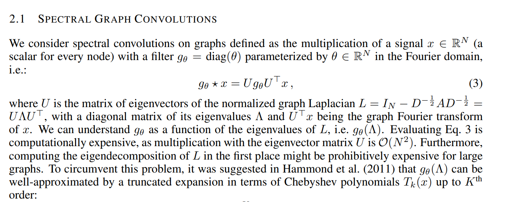 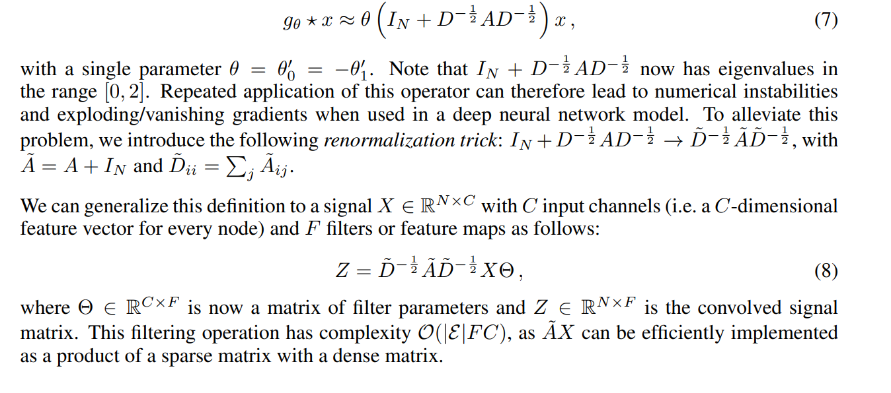
그래프에서 spectral convolutions를 다음과 같이 각 신호 x에 대한 필터 \(g_\theta\)에 대한 곱으로 정의한다.
\(g_\theta * x = Ug_\theta{U^T}x\) U 는 그래프의 normalized Laplacian 행렬 \(L = \tilde{D}^{-\frac{1}{2}}\tilde{A}\tilde{D}^{-\frac{1}{2}} = UΛU^T\) 의 고유벡터 행렬을 의미한다. \(Λ\)는 고유값을 나타내는 대각행렬이고, \(U^Tx\) 는 x에 대한 그래프 푸리에 변환이다.
최종적으로,
논문에서는 renormalization trick을 통해 , normalized laplacian 을 아래와 같이 사용한다.
$\( L = \tilde{D}^{-\frac{1}{2}}\tilde{A}\tilde{D}^{-\frac{1}{2}} = UΛU^T \)$
인접 행렬의 한계점
A에는 neighbor node와의 연결만 표현되어 있기 때문에 graph convolution 과정에서 해당 node 자체에 대한 정보는 latent feature vector를 만들 때 고려되지 않는다. → self loop 추가
일반적으로 A는 정규화되어 있지 않기 때문에 feature vector와 A를 곱할 경우 feature vector의 크기가 불안정하게 변할 수 있다. → 정규화
GCN ,\(f(X,A)\) $\( H^{(l+1)} = \sigma(\tilde{D}^{-\frac{1}{2}}\tilde{A}\tilde{D}^{-\frac{1}{2}}H^{(l)}W^{(l)}) \)$
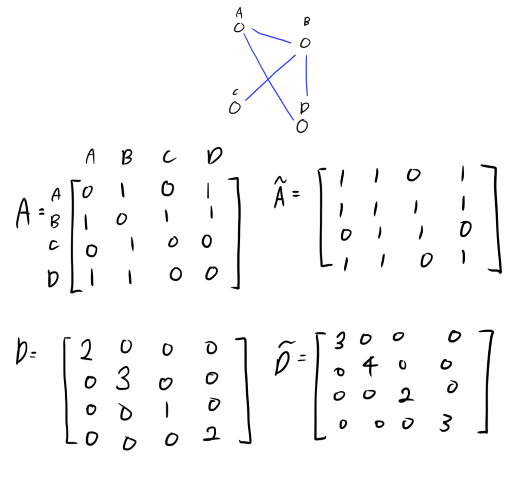 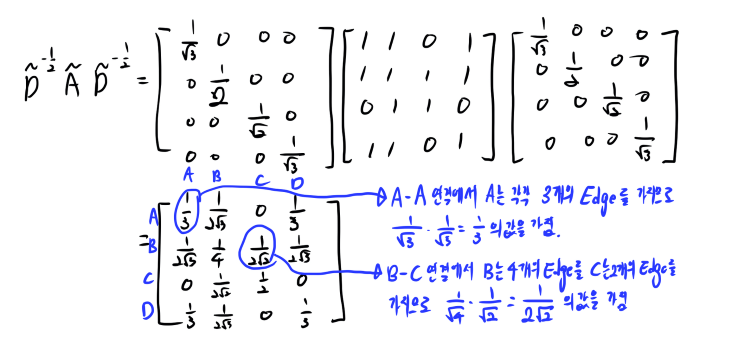 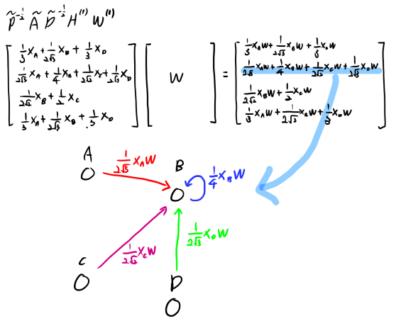
위에서 계산한 \(\tilde{D}^{-\frac{1}{2}}\tilde{A}\tilde{D}^{-\frac{1}{2}}\) 를 이용하여 \(H^{(l)},l=0\) 을 계산하였다.
l=0인 경우 초기값은 각 노드의 초기 feature vector들이다. 예를들어, 노드가 단어라면 word embedding, 문서라면 back of word vector 인 식이다.
결국 식을 풀면, 각 행은 각 노드에 연결된 자기자신을 포함한 노드들의 초기 feature값들의 normalized된 가중합이다.
이후 학습가능한 파라미터인 \(W^{(l)}\) 곱하여, 각 노드별로 인접 노드들의 가중치 * feature vector * W 의 합을 가지게 된다.
→ GCN은 특정 노드의 representation으로 해당 노드에 연결되어 있는 노드들을 가중합하는 방법이라고 볼 수 있다.
GCN Model¶
논문에서는 2-layer GCN을 이용하였다. 비선형 함수로 첫 번째 layer에서는 ReLU , 두 번째 layer에서는 classification을 위해 Softmax를 이용한다
traditional FC layer 과 비슷하다. 크게 두 스텝으로 나눠서 보자면
aggregate neighbors
pass to a standard neural net
→ 비선형 함수를 통해 low dimention represent vector 로 축소한다.
→ last layer 의 output dimension = 1 , for classification
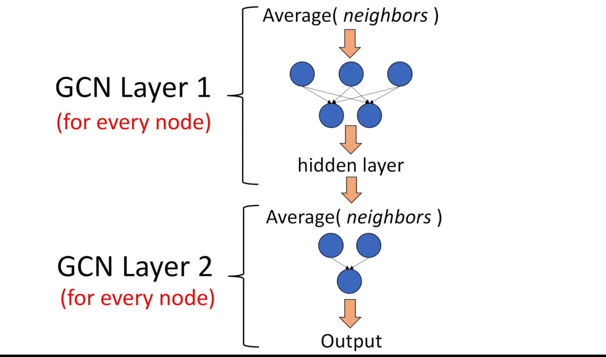
Experiment¶
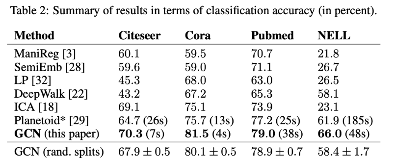 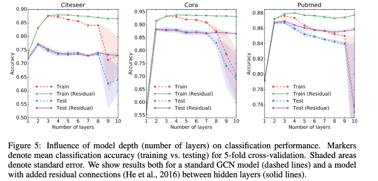
\(H^{(l+1)} = \sigma(\tilde{D}^{-\frac{1}{2}}\tilde{A}\tilde{D}^{-\frac{1}{2}}H^{(l)}W^{(l)}) + H^{(l)}\)
논문에 따르면 residual connection 을 추가한 모델은 layer가 더 깊어졌을 때, 좀 더 학습을 잘했다.
가장 좋은 결과는 2~3 개의 layer를 이용한 경우였다.